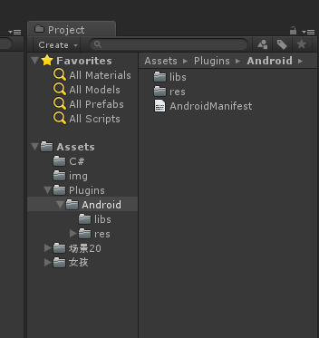

打开Android Studio
创建一个安卓项目
在创建一个Module模块
File/New/New Module/Android Library
拷贝文件classes.jar
（C:\Program Files\Unity\Editor\Data\PlaybackEngines\androidplayer\Variations\mono\Release\Classes\classes.jar）
到Module模块的libs目录
选中classes.jar 右键/Add As Library
MainActivity.java
package com.xia_01.aa_006;
import android.os.Bundle;
import com.unity3d.player.UnityPlayerActivity;
public class MainActivity extends UnityPlayerActivity {
@Override
protected void onCreate(Bundle savedInstanceState) {
super.onCreate(savedInstanceState);
}
public int S_test01(int i2,int i3){
return i2+i3;
}
}
AndroidManifest.xml
<?xml version="1.0" encoding="utf-8"?>
<manifest package="com.xia_01.aa_001"
xmlns:android="http://schemas.android.com/apk/res/android">
<application
android:allowBackup="true"
android:icon="@mipmap/ic_launcher"
android:label="@string/app_name"
android:supportsRtl="true"
android:theme="@style/AppTheme">
<activity android:name=".MainActivity">
<intent-filter>
<action android:name="android.intent.action.MAIN"/>
<category android:name="android.intent.category.LAUNCHER"/>
</intent-filter>
</activity>
</application>
</manifest>
//编译工程--------------
选中项目 点击 Build/make Module "bmobpay"
//生成的包目录---------------
项目名/build/
创建unity3d项目
目录位置
Plugins/Android/libs
/res

import
com.unity3d.player.UnityPlayerActivity;
import
com.unity3d.player.UnityPlayer;
public class MainActivity extends
UnityPlayerActivity {
@Override
protected void onCreate(Bundle
savedInstanceState)
{
super.onCreate(savedInstanceState);
}
public
void S_001(int i2,int
i3){
S_002(i2*i3);
}
public void S_002(int
ii){
UnityPlayer.UnitySendMessage("java", "S_002",
ii+"");
}
}
//u3d调用java包------------------------------------------
void S_001() {
AndroidJavaClass jc =new
AndroidJavaClass("com.unity3d.player.UnityPlayer");
AndroidJavaObject jo
=jc.GetStatic<AndroidJavaObject>("currentActivity");
jo.Call("S_001",111,6);//方法名S001,参数56和50
//int ii=
jo.Call<int>("S_001",56,50);//泛型与返回值
}
public void S_002(string ss)
{
o_tt.text=ss;
}
public void S_单独java包的调用() {
AndroidJavaClass
jc=new AndroidJavaClass("con.ssss.C_mm");
int ii
=jc.CallStatic<int>("S_002",new object[] { 1,"kk",44 });
}
//============================================================
package com.xex.sseh.wxapi;
import java.io.UnsupportedEncodingException;
import
java.net.URLEncoder;
import java.util.Iterator;
import
java.util.Map;
import java.util.Set;
import java.util.SortedMap;
import
java.util.TreeMap;
import org.json.JSONObject;
import com.tencent.mm.sdk.constants.ConstantsAPI;
import
com.tencent.mm.sdk.modelbase.BaseReq;
import
com.tencent.mm.sdk.modelbase.BaseResp;
import
com.tencent.mm.sdk.modelmsg.SendAuth;
import
com.tencent.mm.sdk.modelmsg.SendMessageToWX;
import
com.tencent.mm.sdk.modelmsg.WXMediaMessage;
import
com.tencent.mm.sdk.modelmsg.WXTextObject;
import
com.tencent.mm.sdk.modelmsg.WXWebpageObject;
import
com.tencent.mm.sdk.modelpay.PayReq;
import
com.tencent.mm.sdk.openapi.IWXAPI;
import
com.tencent.mm.sdk.openapi.IWXAPIEventHandler;
import
com.tencent.mm.sdk.openapi.WXAPIFactory;
import
com.unity3d.player.UnityPlayer;
import
com.unity3d.player.UnityPlayerActivity;
import
android.content.ComponentName;
import android.content.Intent;
import
android.os.Bundle;
import android.widget.Toast;
public class WXPayEntryActivity extends UnityPlayerActivity implements
IWXAPIEventHandler{
// IWXAPI
是第三方app和微信通信的openapi接口
IWXAPI api;
String appID;
static WXPayEntryActivity
ccc;
@Override
public void
onCreate(Bundle savedInstanceState)
{
super.onCreate(savedInstanceState);
ccc=this;
}
public static String S_消息处理(int v编号,String
ss){
String v消息="==";
switch (v编号) {
case
0:
v消息=ccc.S_0_初始化(ss);
break;
case
1:
v消息=ccc.S_1_发起支付(ss);
break;
case
2:
v消息=ccc.S_2_分享到微信(ss);
break;
case
3:
v消息=ccc.S_3_分享到微信2(ss);
break;
case
4:
try {
v消息=ccc.S_4_数据打包(ss);
}catch (UnsupportedEncodingException e)
{
v消息="统一下单_异常";//输出异常信息
}
break;
case
5:
break;
}
return
v消息;
}
String
S_0_初始化(String appid) {
ccc.appID=appid;
ccc.api = WXAPIFactory.createWXAPI(ccc, ccc.appID,
false);
// 将该app注册到微信
ccc.api.registerApp(ccc.appID);
//
通过WXAPIFactory工厂，获取IWXAPI的实例
//ccc.api.handleIntent(ccc.getIntent(), ccc);
return
"MainActivity_appid初始化化成功";
}
String S_1_发起支付(String
ss){
//String url = "http://wxpay.weixin.qq.com/pub_v2/app/app_pay.php?plat=android";
//
将该app注册到微信
api.registerApp(appID);
try{
JSONObject json = new
JSONObject(ss);
if(null != json &&
!json.has("retcode") ){
PayReq req = new
PayReq();
//req.appId = "wxf8b4f85f3a794e77";
// 测试用appId
req.appId =
json.getString("appid");
req.partnerId =
json.getString("partnerid");
req.prepayId =
json.getString("prepayid");
req.nonceStr =
json.getString("noncestr");
req.timeStamp =
json.getString("timestamp");
req.packageValue =
json.getString("package");
req.sign =
json.getString("sign");
req.extData =
"app data"; // optional
Toast.makeText(ccc, "正常调起支付",
Toast.LENGTH_SHORT).show();
//Toast.makeText(ccc,
"launch result = " + api.openWXApp(),
Toast.LENGTH_LONG).show();
//
在支付之前，如果应用没有注册到微信，应该先调用IWXMsg.registerApp将应用注册到微信
S_回调u3d(0,ss);
ccc.api.sendReq(req);
}else{
S_回调u3d(0,"PAY_GET__返回错误"+json.getString("retmsg"));
Toast.makeText(ccc, "返回错误"+json.getString("retmsg"),
Toast.LENGTH_SHORT).show();
}
}catch (Exception ex) {
ccc.S_回调u3d(0,"S_发起支付
_失败了:"+ex.getLocalizedMessage());
}
return
"S_发起支付----成功";
}
String S_2_分享到微信(String ss){
//0好友或1朋友圈---url--标题--内容---
String[]
sss=ss.split("&");
WXWebpageObject webpage
= new WXWebpageObject();
webpage.webpageUrl = sss[1];//"这里填写链接url"=================
WXMediaMessage msg = new
WXMediaMessage(webpage);
msg.title =
sss[2];//"这里填写标题"===========================
msg.description = sss[3];//"这里填写内容"======================
//这里替换一张自己工程里的图片资源
//Bitmap thumb =
BitmapFactory.decodeResource(getResources(), R.drawable.share_logo);
//msg.setThumbImage(thumb);
SendMessageToWX.Req req = new
SendMessageToWX.Req();
req.transaction
= String.valueOf(System.currentTimeMillis());
req.message = msg;
req.scene =
sss[0]=="0"?SendMessageToWX.Req.WXSceneSession:
SendMessageToWX.Req.WXSceneTimeline;
ccc.api.sendReq(req);
ccc.S_回调u3d(0,"分享成功了_"+ss);
return
"S_2_分享到微信----成功";
}
String S_3_分享到微信2(String
v标题){
WXTextObject textObj = new
WXTextObject();
textObj.text = v标题;
WXMediaMessage
msg = new WXMediaMessage();
msg.mediaObject =
textObj;
// 发送文本类型的消息时，title字段不起作用
msg.title =
"将被忽略=========";
msg.description =
v标题;
SendMessageToWX.Req req = new
SendMessageToWX.Req();
req.transaction =
ccc.buildTransaction("text"); //
transaction字段用于唯一标识一个请求
req.message =
msg;
req.scene =
SendMessageToWX.Req.WXSceneFavorite;
req.openId =
"dddddddddd";//ccc.getOpenId();
//
调用api接口发送数据到微信
ccc.api.sendReq(req);
return
"S_3_分享到微信----成功";
}
String buildTransaction(final String
type) {
return (type == null) ?
String.valueOf(System.currentTimeMillis()) : type +
System.currentTimeMillis();
}
//String getOpenId()
{
//EditText openIdEt = (EditText)
findViewById(R.id.openid_et);
//return
openIdEt.getText().toString();
//}
//
微信发送请求到第三方应用时，会回调到该方法
@Override
public void onReq(BaseReq req)
{
Toast.makeText(this, "openid = " + req.openId,
Toast.LENGTH_SHORT).show();
switch (req.getType())
{
case
ConstantsAPI.COMMAND_GETMESSAGE_FROM_WX:
S_回调u3d(0,"qqddddddd1116");
S_打开应用();
break;
case
ConstantsAPI.COMMAND_SHOWMESSAGE_FROM_WX:
S_回调u3d(0,"qqddddddd1114");
S_打开应用();
break;
case
ConstantsAPI.COMMAND_LAUNCH_BY_WX:
S_回调u3d(0,"qqddddddd1112");
break;
default:
S_回调u3d(0,"qqddddddd1113");
break;
}
}
//
第三方应用发送到微信的请求处理后的响应结果，会回调到该方法
@Override
public void
onResp(BaseResp resp) {
Toast.makeText(this, "openid = " +
resp.openId, Toast.LENGTH_SHORT).show();
if
(resp.getType() == ConstantsAPI.COMMAND_SENDAUTH)
{
Toast.makeText(this, "code = " + ((SendAuth.Resp)
resp).code, Toast.LENGTH_SHORT).show();
}
switch
(resp.errCode) {
case
BaseResp.ErrCode.ERR_OK:
S_回调u3d(0,"ddddddd111");
break;
case
BaseResp.ErrCode.ERR_USER_CANCEL:
S_回调u3d(0,"ddddddd222");
break;
case
BaseResp.ErrCode.ERR_AUTH_DENIED:
S_回调u3d(0,"ddddddd333");
break;
default:
S_回调u3d(0,"ddddddd777");
break;
}
}
void
S_回调u3d(int v编号,String ss){
UnityPlayer.UnitySendMessage("o_微信接口", "S_安卓回调",
v编号+"@"+ss);
}
void S_打开应用(){
Intent
intent = new Intent();
intent.setComponent(new
ComponentName("org.hy","org.hy.Test222Activity"));
intent.setAction(Intent.ACTION_VIEW);
startActivity(intent);
}
String S_4_数据打包(String ss) throws UnsupportedEncodingException
{
String[] sss=ss.split("@");
SortedMap<String, String> v排序字典=new TreeMap<String,
String>();
for(int
i=0;i<sss.length;i++){
String[]
sss2=sss[i].split("&");
v排序字典.put(sss2[0], sss2[1]);
}
String sign =
S_Sign(v排序字典);
//v排序字典.put("sign", sign);
//-------------
StringBuffer sb =
new StringBuffer();
Set es =
v排序字典.entrySet();
Iterator it =
es.iterator();
while
(it.hasNext())
{
Map.Entry entry = (Map.Entry)
it.next();
String k = (String)
entry.getKey();
String v = (String)
entry.getValue();
v=S_UrlEncode(v);
if
("attach".equalsIgnoreCase(k)||"body".equalsIgnoreCase(k)||"sign".equalsIgnoreCase(k))
{
sb.append("<"+k+">"+"<![CDATA["+v+"]]></"+k+">\n");
}else
{
sb.append("<"+k+">"+v+"</"+k+">\n");
}
}
sb.append("<sign>"+sign+"</sign>\n");
//String packageValue = sb.append("sign=" +
sign).toString();
String ss2 =
"<xml>\n"+sb.toString()+"</xml>";
return ss2;
}
SortedMap o_参数= new
TreeMap();
String S_UrlEncode(String src) throws
UnsupportedEncodingException {
return URLEncoder.encode(src, o_编码).replace("+", "%20");
}
String o_编码= "GBK";
String
o_key="HSZ8CyyLbAAIihvFe5k2U4l6ksQ86zje";
String
S_Sign(SortedMap<String, String> packageParams)
{
StringBuffer sb = new
StringBuffer();
Set es =
packageParams.entrySet();
Iterator
it = es.iterator();
while
(it.hasNext())
{
Map.Entry entry = (Map.Entry)
it.next();
String k = (String)
entry.getKey();
String v = (String)
entry.getValue();
if (null != v && !"".equals(v) && !"sign".equals(k)&&
!"key".equals(k))
{
sb.append(k + "=" + v +
"&");
}
}
sb.append("key=" +
o_key);
System.out.println("md5
sb:" + sb);
String sign =
MD5Util.MD5Encode(sb.toString(), o_编码).toUpperCase();
return
sign;
}
}
//-------------------------------------------------------------------------
package wxapi;
import com.tencent.mm.sdk.constants.ConstantsAPI;
import
com.tencent.mm.sdk.modelbase.BaseReq;
import
com.tencent.mm.sdk.modelbase.BaseResp;
import
com.tencent.mm.sdk.openapi.IWXAPI;
import
com.tencent.mm.sdk.openapi.IWXAPIEventHandler;
import
com.tencent.mm.sdk.openapi.WXAPIFactory;
import
com.xex.sseh.MainActivity;
import android.app.Activity;
import android.content.Intent;
import
android.os.Bundle;
public class WXEntryActivity extends Activity implements
IWXAPIEventHandler{
IWXAPI api;
public static
WXEntryActivity ccc;
@Override
protected void
onCreate(Bundle savedInstanceState)
{
super.onCreate(savedInstanceState);
ccc=this;
MainActivity.ccc.S_回调u3d("WXEntryActivity");
}
public static
void S_Get(){
MainActivity.ccc.S_回调u3d("1111-----
"+MainActivity.ccc.o_AppId);
ccc.api =
WXAPIFactory.createWXAPI(ccc, MainActivity.ccc.o_AppId,
false);
MainActivity.ccc.S_回调u3d("1111111112==========");
ccc.api.registerApp(MainActivity.ccc.o_AppId);
MainActivity.ccc.S_回调u3d("11111111122222222");
ccc.api.handleIntent(ccc.getIntent(),
ccc);
MainActivity.ccc.S_回调u3d("111111111333333333");
}
@Override
protected void onNewIntent(Intent intent)
{
super.onNewIntent(intent);
setIntent(intent);
api.handleIntent(intent, this);
}
//
微信发送请求到第三方应用时，会回调到该方法
@Override
public void onReq(BaseReq req)
{
switch (req.getType())
{
case
ConstantsAPI.COMMAND_GETMESSAGE_FROM_WX:
MainActivity.ccc.S_回调u3d("ConstantsAPI.COMMAND_GETMESSAGE_FROM_WX");
break;
case
ConstantsAPI.COMMAND_SHOWMESSAGE_FROM_WX:
MainActivity.ccc.S_回调u3d("ConstantsAPI.COMMAND_SHOWMESSAGE_FROM_WX");
break;
default:
break;
}
}
//
第三方应用发送到微信的请求处理后的响应结果，会回调到该方法
@Override
public void
onResp(BaseResp resp) {
switch
(resp.errCode) {
case
BaseResp.ErrCode.ERR_OK:
MainActivity.ccc.S_回调u3d(
"亲，分享成功了");
break;
case
BaseResp.ErrCode.ERR_USER_CANCEL:
MainActivity.ccc.S_回调u3d("取消分享");
break;
case
BaseResp.ErrCode.ERR_AUTH_DENIED:
MainActivity.ccc.S_回调u3d("认证失败");
break;
default:
MainActivity.ccc.S_回调u3d("errcode_unknown");
break;
}
}
}
//----------------------------------------------------
<activity
android:name=".wxapi.WXEntryActivity"
android:exported="true"
android:label="@string/app_name"
android:launchMode="singleTop" />
//===============================================================================
using System;
using System.Collections;
using
System.Collections.Generic;
using System.Security.Cryptography;
using
System.Text;
using System.Xml;
using UnityEngine;
public class
C_微信支付接口:MonoBehaviour {
const string o_统一下单URL = "https://api.mch.weixin.qq.com/pay/unifiedorder";
const string o_网页授权URL = "https://api.weixin.qq.com/sns/oauth2/access_token";
const string o_订单查询URL = "https://api.mch.weixin.qq.com/pay/orderquery";
static C_微信支付接口 ccc;
public static C_微信支付接口 S_Get()
{
if(ccc==null){
GameObject gg =
GameObject.Find("o_微信支付接口");
if(gg!=null){
Destroy(gg);
}
gg=new
GameObject("o_微信支付接口");
ccc=gg.AddComponent<C_微信支付接口>();
}
return
ccc;
}
public void S_安卓回调(string ss)
{
Debug.Log(ss);
}
public void
S_统一下单(int v金额) {
StartCoroutine(I_统一下单(v金额));
}
IEnumerator I_统一下单(int v金额) {
string xml = C_统一下单.S_统一下单整理(v金额);
byte[]
data=System.Text.Encoding.UTF8.GetBytes(xml);
WWW www=new WWW(o_统一下单URL,data);
yield return www;
string tt =
"";
if(www.error==null)
{
tt=www.text;
Debug.LogError(tt);
} else
{
Debug.Log(www.text);
SortedDictionary<string, string> requestXML = S_XML到字段列表(www.text);
foreach(KeyValuePair<string, string> k in requestXML)
{
if(k.Key=="prepay_id")
{
tt=k.Value;
break;
}
}
Debug.Log(tt);
C_统一下单.S_吊起微信支付(tt);
}
}
public
C_订单明细 S_获取微信订单明细() {
string
post_data = C_订单查询.S_订单查询整理();
string request_data ="";//
S_WebPost(o_订单查询URL,post_data);
C_订单明细 md = new C_订单明细();
SortedDictionary<string, string> requestXML =
S_XML到字段列表(request_data);
foreach(KeyValuePair<string, string> k in requestXML)
{
switch(k.Key)
{
case
"retuen_code":
md.result_code=k.Value;
break;
case
"return_msg":
md.return_msg=k.Value;
break;
case
"appid":
md.appid=k.Value;
break;
case
"mch_id":
md.mch_id=k.Value;
break;
case
"nonce_str":
md.nonce_str=k.Value;
break;
case
"sign":
md.sign=k.Value;
break;
case
"result_code":
md.result_code=k.Value;
break;
case
"err_code":
md.err_code=k.Value;
break;
case
"err_code_des":
md.err_code_des=k.Value;
break;
case
"trade_state":
md.trade_state=k.Value;
break;
case
"device_info":
md.device_info=k.Value;
break;
case
"openid":
md.openid=k.Value;
break;
case
"is_subscribe":
md.is_subscribe=k.Value;
break;
case
"trade_type":
md.trade_type=k.Value;
break;
case
"bank_type":
md.bank_type=k.Value;
break;
case
"total_fee":
md.total_fee=k.Value;
break;
case
"coupon_fee":
md.coupon_fee=k.Value;
break;
case
"fee_type":
md.fee_type=k.Value;
break;
case
"transaction_id":
md.transaction_id=k.Value;
break;
case
"out_trade_no":
md.out_trade_no=k.Value;
break;
case
"attach":
md.attach=k.Value;
break;
case
"time_end":
md.time_end=k.Value;
break;
default:
break;
}
}
return md;
}
public static string
S_Get微信签名(SortedDictionary<string,string> v列表)
{
//key设置路径：微信商户平台(pay.weixin.qq.com)-->账户设置-->API安全-->密钥设置
string
key="192006250b4c09247ec02edce69f6a2d";
int i = 0;
string sign =
string.Empty;
StringBuilder sb =
new StringBuilder();
foreach(KeyValuePair<string, string> temp in v列表)
{
if(temp.Value==""||temp.Value==null||temp.Key.ToLower()=="sign")
{
continue;
}
i++;
sb.Append(temp.Key.Trim()+"="+temp.Value.Trim()+"&");
}
sb.Append("key="+key.Trim()+"");
sign=S_GetMD5(sb.ToString(),"utf-8");
return sign;
}
public static string
S_GetMD5(string encypStr,string charset)
{
string
retStr;
MD5CryptoServiceProvider
m5 = new
MD5CryptoServiceProvider();
//创建md5对象
byte[]
inputBye;
byte[]
outputBye;
//使用GB2312编码方式把字符串转化为字节数组．
try
{
inputBye=Encoding.GetEncoding(charset).GetBytes(encypStr);
} catch(Exception ex)
{
inputBye=Encoding.GetEncoding("GB2312").GetBytes(encypStr);
}
outputBye=m5.ComputeHash(inputBye);
retStr=System.BitConverter.ToString(outputBye);
retStr=retStr.Replace("-","").ToUpper();
return retStr;
}
public static
string S_随机串() {
System.Random
random = new System.Random();
return
S_GetMD5(random.Next(1000).ToString(),"GBK").ToLower().Replace("s","S");
}
public static string S_Get时间截()
{
TimeSpan ts =
DateTime.UtcNow-new
DateTime(1970,1,1,0,0,0,0);
return
Convert.ToInt64(ts.TotalSeconds).ToString();
}//自1970年以来的秒数
SortedDictionary<string,string>
S_XML到字段列表(string xmlstring) {
SortedDictionary<string, string> sParams = new
SortedDictionary<string,string>();
try {
XmlDocument doc = new
XmlDocument();
doc.LoadXml(xmlstring);
XmlElement root =
doc.DocumentElement;
int len =
root.ChildNodes.Count;
for(int i = 0;i<len;i++)
{
string name =
root.ChildNodes[i].Name;
if(!sParams.ContainsKey(name))
{
sParams.Add(name.Trim(),root.ChildNodes[i].InnerText.Trim());
}
}
} catch {
}
return
sParams;
}
public class C_统一下单
{
public string
#region
MyRegion
o_应用ID="wx6b82f53daeeec518",
o_商户号="15197507036",
o_签名="0CB01533B8C1EF103065174F50BCA001",
o_商品描述="千里飞雪002",
o_商户订单号="1415659990",
o_终端IP="123.25.26.123",
o_通知地址="http://wxpay.weixin.qq.com/pub_v2/pay/notify.v2.php",
o_交易类型="APP";
#endregion
static C_统一下单
ccc;
public static string
S_统一下单整理(int v金额)
{
if(ccc==null)
{
ccc=new
C_统一下单();
}
string
xml =
string.Empty;
SortedDictionary<string, string> v列表 = new
SortedDictionary<string,string>();
v列表.Add("appid",ccc.o_应用ID);
v列表.Add("body",ccc.o_商品描述);
v列表.Add("mch_id",ccc.o_商户号);
v列表.Add("nonce_str",S_随机串());
v列表.Add("notify_url",ccc.o_通知地址);
v列表.Add("out_trade_no",ccc.o_商户订单号);
v列表.Add("spbill_create_ip",ccc.o_终端IP);
v列表.Add("total_fee",v金额.ToString());
v列表.Add("trade_type",ccc.o_交易类型);
ccc.o_签名=S_Get微信签名(v列表);
v列表.Add("sign",ccc.o_签名);
//拼接成XML请求数据
StringBuilder ssb = new
StringBuilder();
foreach(KeyValuePair<string, string> k in v列表)
{
if(k.Key=="attach"||k.Key=="body"||k.Key=="sign")
{
ssb.Append("<"+k.Key+"><![CDATA["+k.Value+"]]></"+k.Key+">");
} else
{
ssb.Append("<"+k.Key+">"+k.Value+"</"+k.Key+">");
}
}
xml=string.Format("<xml>{0}</xml>",ssb.ToString());
byte[] byteA =
Encoding.UTF8.GetBytes(xml);
return
Encoding.GetEncoding("GBK").GetString(byteA);
}
public static void
S_吊起微信支付(string prepay_id)
{
if(ccc==null)
{
ccc=new
C_统一下单();
}
SortedDictionary<string, string> v列表 = new
SortedDictionary<string,string>();
v列表.Add("appid",ccc.o_应用ID);
v列表.Add("partnerid",ccc.o_商户号);
v列表.Add("prepayid",prepay_id);//预支付交易会话ID(微信返回的支付交易会话ID)
v列表.Add("package","Sign=WXPay");//扩展字段(暂填写固定值Sign=WXPay)
v列表.Add("noncestr",S_随机串());//随机字符串
v列表.Add("timestamp",S_Get时间截());//时间戳
ccc.o_签名=S_Get微信签名(v列表);
v列表.Add("sign",ccc.o_签名);
StringBuilder ssb = new
StringBuilder();
foreach(KeyValuePair<string, string> k in v列表)
{
ssb.Append(k.Value+"&");
}
string
ss=ssb.ToString();
ss=ss.Remove(ss.Length-1);
AndroidJavaClass jc =new
AndroidJavaClass("com.unity3d.player.UnityPlayer");
AndroidJavaObject jo
=jc.GetStatic<AndroidJavaObject>("currentActivity");
//jo.Call("S_002","56,50");//泛型与返回值
jo.Call("S_吊起微信支付",ss);//泛型与返回值
}
}
public class C_订单查询
{
///
<summary>
///
公共号ID(微信分配的公众账号 ID)
///
</summary>
public string
appid = "";
///
<summary>
///
商户号(微信支付分配的商户号)
///
</summary>
public string
mch_id = "";
///
<summary>
///
微信订单号，优先使用
///
</summary>
public string
transaction_id = "";
///
<summary>
///
商户系统内部订单号
///
</summary>
public string
out_trade_no = "";
///
<summary>
/// 随机字符串，不长于 32
位
///
</summary>
public string
nonce_str = "";
///
<summary>
///
签名，参与签名参数：appid，mch_id，transaction_id，out_trade_no，nonce_str，key
/// </summary>
public string
sign = "";
static C_订单查询
ccc;
public static string
S_订单查询整理()
{
if(ccc==null)
{
ccc=new
C_订单查询();
}
string
return_string =
string.Empty;
SortedDictionary<string, string> sParams = new
SortedDictionary<string,string>();
sParams.Add("appid",ccc.appid);
sParams.Add("mch_id",ccc.mch_id);
sParams.Add("transaction_id",ccc.transaction_id);
sParams.Add("out_trade_no",ccc.out_trade_no);
sParams.Add("nonce_str",ccc.nonce_str);
ccc.sign=S_Get微信签名(sParams);
sParams.Add("sign",ccc.sign);
//拼接成XML请求数据
StringBuilder sbPay = new
StringBuilder();
foreach(KeyValuePair<string, string> k in sParams)
{
if(k.Key=="attach"||k.Key=="body"||k.Key=="sign")
{
sbPay.Append("<"+k.Key+"><![CDATA["+k.Value+"]]></"+k.Key+">");
} else
{
sbPay.Append("<"+k.Key+">"+k.Value+"</"+k.Key+">");
}
}
return_string=string.Format("<xml>{0}</xml>",sbPay.ToString().TrimEnd(','));
return return_string;
}
}
public class C_订单明细
{
///
<summary>
///
返回状态码，SUCCESS/FAIL
此字段是通信标识，非交易标识，交易是否成功需要查看trade_state来判断
/// </summary>
public string
return_code = "";
///
<summary>
///
返回信息返回信息，如非空，为错误原因 签名失败 参数格式校验错误
/// </summary>
public string
return_msg = "";
///
<summary>
///
公共号ID(微信分配的公众账号 ID)
///
</summary>
public string
appid = "";
///
<summary>
///
商户号(微信支付分配的商户号)
///
</summary>
public string
mch_id = "";
///
<summary>
///
随机字符串，不长于32位
///
</summary>
public string
nonce_str = "";
///
<summary>
///
签名
///
</summary>
public string
sign = "";
///
<summary>
///
业务结果,SUCCESS/FAIL
///
</summary>
public string
result_code = "";
///
<summary>
///
错误代码
///
</summary>
public string
err_code = "";
///
<summary>
///
错误代码描述
///
</summary>
public string
err_code_des = "";
///
<summary>
///
交易状态
///SUCCESS―支付成功
///REFUND―转入退款
///NOTPAY―未支付
///CLOSED―已关闭
///REVOKED―已撤销
///USERPAYING--用户支付中
///NOPAY--未支付(输入密码或确认支付超时)
PAYERROR--支付失败(其他原因，如银行返回失败)
///
</summary>
public string
trade_state = "";
///
<summary>
///
微信支付分配的终端设备号
///
</summary>
public string
device_info = "";
///
<summary>
///
用户在商户appid下的唯一标识
///
</summary>
public string
openid = "";
///
<summary>
///
用户是否关注公众账号，Y-关注，N-未关注，仅在公众账号类型支付有效
/// </summary>
public string
is_subscribe = "";
///
<summary>
///
交易类型,JSAPI、NATIVE、MICROPAY、APP
///
</summary>
public string
trade_type = "";
///
<summary>
///
银行类型，采用字符串类型的银行标识
///
</summary>
public string
bank_type = "";
///
<summary>
///
订单总金额，单位为分
///
</summary>
public string
total_fee = "";
///
<summary>
///
现金券支付金额<=订单总金额，订单总金额-现金券金额为现金支付金额
/// </summary>
public string
coupon_fee = "";
///
<summary>
/// 货币类型，符合ISO
4217标准的三位字母代码，默认人民币：CNY
///
</summary>
public string
fee_type = "";
///
<summary>
///
微信支付订单号
///
</summary>
public string
transaction_id = "";
///
<summary>
///
商户系统的订单号，与请求一致。
///
</summary>
public string
out_trade_no = "";
///
<summary>
///
商家数据包，原样返回
///
</summary>
public string
attach = "";
///
<summary>
///
支付完成时间，格式为yyyyMMddhhmmss，如2009年12月27日9点10分10秒表示为20091227091010。
/// 时区为GMT+8 beijing。该时间取自微信支付服务器
/// </summary>
public string
time_end = "";
}
}